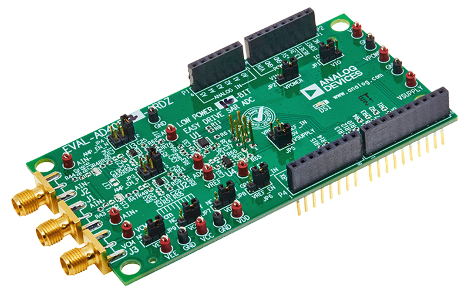

EVAL-AD4050/AD4052-ARDZ
The EVAL-AD4050-ARDZ and EVAL-AD4052-ARDZ evaluation boards enable quick and easy evaluation of the performance and features of the AD4050 or the AD4052, respectively. The AD4050 and AD4052 are compact, low power, 12-bit or 16-bit (respectively) Easy Drive successive approximation register (SAR) analog-to-digital converters (ADCs).
The evaluations board are designed to conform to the Arduino Uno Shield mechanical and electrical standard.
Overview
This section provides a general overview on the evaluation board, all supported carriers, firmware and software.
The following carriers are supported, followed by the target firmware:
Carrier |
no-OS |
Linux |
NUCLEO-H503RB |
✓ |
|
NUCLEO-H563ZI |
✓ |
|
Cora Z7S |
✓ |
|
DE10-Nano |
✓ |
|
SDP-K1 [1] |
✓ |
Features
Full featured evaluation boards for the AD4050 and AD4052 with a USB power solution.
Single differential channel and common-mode input available through SMA connectors.
PC software (ACE plugin/IIO Oscilloscope) for control and data analysis of the time and frequency domains.
Compatible with other Arduino form factor controller boards.
Evaluation board kit contents
EVAL-AD4050-ARDZ/EVAL-AD4052-ARDZ evaluation board.
Equipment needed
Host PC.
One of the supported carriers.
Precision signal source with SMA cable.
Hardware
The evaluation board is connected to the Arduino Uno compatible headers of the carrier.
When powering from the carrier, ensure the JP2 jumper is to the +5V position and power on the carrier board.
When powering from an external power supply, ensure the JP2 jumper is set to the VIN position, power on the carrier board, and provide power to VIN (according to the carrier board user guide).
For more information about hardware specifications, see the EVAL-AD4050-ARDZ/EVAL-AD4052-ARDZ evaluation board pages, in particular, the user guide and design support files.
User Guides
This chapter is aimed to everyone using the evaluation board. It provides instructions on bringing-up the evaluation board with pre-built binaries for supported carries, and how to interact with it.
Developers
This chapter summarizes all source code and related documentation of the evaluation board.
To work with the source code, you should have prior knowledge on software development and HDL design (for the FPGA). We provide pointers to introductory guides, although their scope is limited to topics that particularly relate to our codebase and do not replace the full documentation of the tools used.
Drivers
The drivers source code are available at:
Firmware |
Source code |
Documentation |
no-OS |
||
Linux |
The no-OS driver is divided into a core driver and a tinyIIO layer to be used with Libiio. The Linux driver is always exposed via the Linux Industrial I/O Subsystem.
To get started with no-OS drivers, checkout no-OS drivers guide, and for Linux drivers the Kernel and devicetrees page.
Projects
The source code for baremetal projects can be found at:
Carrier |
Firmware |
Project |
Documentation |
NUCLEO-H503RB |
no-OS |
TODO |
|
NUCLEO-H563ZI |
no-OS |
TODO |
|
SDP-K1 |
precision-converters-firmware |
||
CoraZ7S |
Linux |
- |
- |
DE10-Nano |
Linux |
- |
- |
For the no-OS project, the basic examples use only the core driver, while the iio example uses the tinyIIO layer to expose the device to Libiio.
The precision-converters-firmware project also expose the device to Libiio, differentiating only on the target carrier.
Since the Linux driver exposes the device via the Linux Industrial I/O Subsystem, no project is required to leverage the device on Linux targets (CoraZ7S and DE10-Nano).
Follow no-OS projects and precision-converters-firmware projects to comprehend the project structure for each.
Linux devicetrees
For the carriers targeting Linux, the devicetrees are available at:
Carrier |
Devicetree |
Cora Z7S |
|
DE10-Nano |
- |
HDL reference design
The DE10-Nano and Cora Z7s use the FPGA to instantiate the controllers to interface the evaluation board.
The source code is available at projects/ad4052_ardz and documented at AD4052-ARDZ HDL project.
Get start with the HDL reference design reading the User Guide.
Software & Bindings
Using any IIO or TinyIIO driver layer, the device can be interacted through Libiio, language bindings on top of libiio and the IIO Oscilloscope GUI.
For the Python language a class abstraction of the device is available at adi/ad405x.py (class doc), with an example at examples/ad4052_example.py
Help and Support
For questions and more information, please visit the EngineerZone Support Community.
All the products described on this page include ESD (electrostatic discharge) sensitive devices. Electrostatic charges as high as 4000V readily accumulate on the human body or test equipment and can discharge without detection. Although the boards feature ESD protection circuitry, permanent damage may occur on devices subjected to high-energy electrostatic discharges. Therefore, proper ESD precautions are recommended to avoid performance degradation or loss of functionality. This includes removing static charge on external equipment, cables, or antennas before connecting to the device.